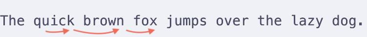
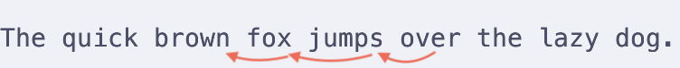
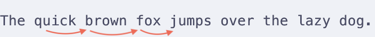
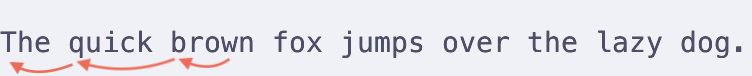

Vim Part 2 - More Navigation
In this post I will add more basic navigation commands. After trying first four basic movements, you probably realized that it is tedious to move around using the cursor. In this post, as well as the future ones, we will be learning more efficient ways of moving around vim.
Jumping Between Words
To jump between words, there are four commands to use. They are: e, b, w, and ge.
e- jumps to the last letter of the word under the cursor. If the letter under the cursor is already the last one, it will jump to the last letter of the next word.
This is the way to jump forward between words staying on the last letter.

ge- Jumps to the last letter the previous word. A way to navigate back from a bunch ofes.

w- jumps to the first letter of the next word. This acts likegebut in a different direction.

b- jumps to the first letter of the current word under the cursor. If the letter under the cursor is already the first one, it will jump to the first letter of the previous word.

I use these motions to jump around the same word. Let's say I am on a random word in a random position. I click b and immediately get to its first letter. I click e and get to its last letter.
w is something I use to jump a bunch of words forward. If I miss the word I needed, I may adjust myself using ge.
These nuances don't matter much, as there are more efficient ways of navigating. But mastering basics is still important, so ignoring the existence of said motions is not the way to move forward.
Jumping Within a Line
This one is simple. To jump to the beginning of the line use 0. To jump to the end of it use $. These two are used all the time by me, and worth getting comfortable with.
Sometimes you see the character you want to reach. To jump to it, you may click f following with the target character. This will move the cursor to the first occurance within the line. If after the first jump you realize that you need to go further to the right, press ;. This will jump to the next occurance. Proceed to do this, until you reach your destination.
In case you jumped over the needed character, you can press , which will take you back to the previous occurance.
This method is a better way of reaching a word/letter/character within one line, as you don't have to click as much to reach the word.
Other operators worth mentioning:
F- acts asf, but jumps backwards.t- acts asf, but with every jump, it lands not on the target letter, but on the last letter before it.T- acts ast, but jumps backwards.
Conclusion
At first, I wanted to add more commands and operators. But the amount of information above should be enough to leave you overwhelmed.
A little summary of what to drill, and what to just touch and understand.
To drill:
e,b. Abused by me to jump within a word, or within a couple of words.0,$. Quick jump to the beginning or the end.f,F,;,,. A good way of reaching a letter that is not around the cursor.
The rest are not as important(imho): w, ge, t, T.
Keep grinding slowly. Do not rush.